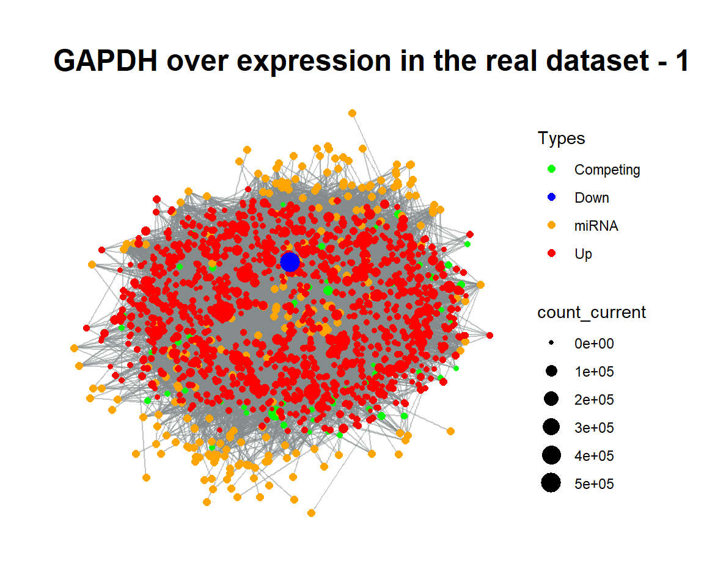

Approach in A Real Dataset
Selcen Ari
2019-08-06
realexample.RmdDescription of the huge_example dataset?
Interactions between miRNAs and their targets can be analyzed after the integration of miRNA and targets via various datasets. As an example, we prepared the huge_example dataset. It was generated by integrating:
- Next-generation RNA sequencing data of a breast cancer patient from TCGA (patient id:TCGA_A7_A0CE)
- The microRNA expression values of the same breast cancer patient.
- High-throughput miRNA:target determination datasets. We utilised the microRNA:target gene dataset which was integrated from high-throughput experimental studies(CLASH & CLEAR-CLiP methods). These datasets give exact microRNA:target pairs because of these methods base on chimeric reading of pairs after binding of microRNAs and their targets. For this reason, the datasets contain detailed information for microRNA:target pairs such as interacted bases (in terms of degree of complementarity) on microRNAs and target mRNAs, location of interaction region (seed) on mRNA and estimated binding energies of pairs.
Below, only 6 rows from total of 26,176 rows are shown.
# install.packages("devtools")
# devtools::install_github("selcenari/ceRNAnetsim")
library(ceRNAnetsim)
data("huge_example")
head(huge_example)
#> competing miRNA competing_counts mirnaexpression_normal Energy
#> 1 TSPAN6 hsa-miR-484 5404 23.058807 -21.4
#> 2 DPM1 hsa-miR-18b-5p 2472 0.256209 -10.0
#> 3 SCYL3 hsa-miR-149-5p 1483 34.844420 -5.5
#> 4 SCYL3 hsa-miR-30a-5p 1483 63031.505507 -13.0
#> 5 C1orf112 hsa-miR-1296-5p 312 1.793463 -8.1
#> 6 CFH hsa-miR-17-5p 5760 89.929349 -17.2
#> region_effect seed_type_effect
#> 1 0.42 0.43
#> 2 0.84 0.01
#> 3 0.42 0.01
#> 4 0.84 0.43
#> 5 0.42 0.01
#> 6 0.42 0.01Select a node as trigger
The node that initiates simulation can be determined according your interest or research.
The dataset, which is a data frame, can be manipulated with tidyverse packages. As an example, competing RNAs targeted by less than 5 miRNAs are eliminated to make the network manageable size.
huge_example %>%
add_count(competing) %>%
filter(n > 5) %>%
select(-n) -> filtered_example
head(filtered_example)
#> # A tibble: 6 x 7
#> competing miRNA competing_counts mirnaexpression~ Energy region_effect
#> <chr> <chr> <dbl> <dbl> <dbl> <dbl>
#> 1 MAD1L1 hsa-~ 1909 34.8 -18.6 0.42
#> 2 MAD1L1 hsa-~ 1909 297. -19.3 0.01
#> 3 MAD1L1 hsa-~ 1909 55.9 -15.4 0.01
#> 4 MAD1L1 hsa-~ 1909 65.8 -13.6 0.42
#> 5 MAD1L1 hsa-~ 1909 603. -26.7 0.01
#> 6 MAD1L1 hsa-~ 1909 5113. -30.6 0.01
#> # ... with 1 more variable: seed_type_effect <dbl>On the other hand, we chose the node GAPDH according to interaction count of the nodes. With the simulation, the graph was visualized after node GAPDH was increased to five fold.
filtered_example %>%
priming_graph(competing_count = competing_counts,
miRNA_count = mirnaexpression_normal,
aff_factor = Energy) %>%
update_how("GAPDH", 5) %>%
update_nodes() %>%
vis_graph(title = "Distribution of GAPDH gene node")
Let’s visualize each step of simulation via simulate_vis() function.
filtered_example %>%
priming_graph(competing_count = competing_counts,
miRNA_count = mirnaexpression_normal,
aff_factor = Energy) %>%
update_how("GAPDH", 5) %>%
update_nodes() %>%
simulate_vis(title = "GAPDH over expression in the real dataset", 3)
#> Saving 6 x 5 in image
#> Saving 6 x 5 in image
#> Saving 6 x 5 in image
#> # A tbl_graph: 1526 nodes and 11384 edges
#> #
#> # A directed acyclic simple graph with 1 component
#> #
#> # Node Data: 1,526 x 7 (active)
#> name type node_id initial_count count_pre count_current
#> <chr> <chr> <int> <dbl> <dbl> <dbl>
#> 1 MAD1~ Comp~ 1 1909 1909. 1909.
#> 2 TFPI Comp~ 2 3377 3377. 3377.
#> 3 SLC7~ Comp~ 3 8706 8707. 8707.
#> 4 FKBP4 Comp~ 4 20583 20584. 20584.
#> 5 SLC2~ Comp~ 5 1637 1638. 1638.
#> 6 ST7 Comp~ 6 1962 1962. 1962.
#> # ... with 1,520 more rows, and 1 more variable: changes_variable <chr>
#> #
#> # Edge Data: 11,384 x 21
#> from to Competing_name miRNA_name competing_counts mirnaexpression~
#> <int> <int> <chr> <chr> <dbl> <dbl>
#> 1 1 1255 MAD1L1 hsa-miR-1~ 1909 34.8
#> 2 1 1256 MAD1L1 hsa-miR-1~ 1909 297.
#> 3 1 1257 MAD1L1 hsa-miR-1~ 1909 55.9
#> # ... with 1.138e+04 more rows, and 15 more variables: Energy <dbl>,
#> # dummy <dbl>, afff_factor <dbl>, degg_factor <dbl>,
#> # comp_count_list <list>, comp_count_pre <dbl>,
#> # comp_count_current <dbl>, mirna_count_list <list>,
#> # mirna_count_pre <dbl>, mirna_count_current <dbl>,
#> # mirna_count_per_dep <dbl>, effect_current <dbl>, effect_pre <dbl>,
#> # effect_list <list>, mirna_count_per_comp <dbl>
GAPDH over expression in real dataset
Now, we can track changes in expression levels at every node for 3 cycles when GAPDH is overexpressed 5-fold.
After increase in GAPDH expression level in the first graph, the responses of the other competing elements to the GAPDH distributions were calculated.
The changing regulations (up or down) were observed as a result of interactions in the second graph.
When three graphs were carefully compared to each other, it can be observed that the expression levels of nodes change continuously at each stage.